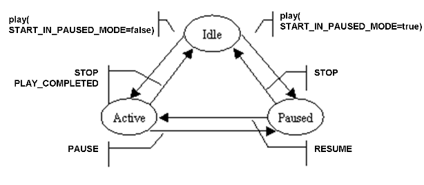

|
||||||||||
| PREV CLASS NEXT CLASS | FRAMES NO FRAMES | |||||||||
| SUMMARY: NESTED | FIELD | CONSTR | METHOD | DETAIL: FIELD | CONSTR | METHOD | |||||||||
public interface Player
Defines methods for playing one or more media streams.
A Player extracts data from a URI, transcodes the
data as necessary, and streams the resultant data out of the MediaGroup.
If the MediaGroup is joined to a NetworkConnection, the stream is sent out on
the network.
The play() method accepts one, or an array, of URIs which
identify the media streams to be played. Each media stream may be encoded by
any codec type supported by this player resource.
When the data at a URI has an audio and a video track, and the MediaGroup (containing the Player) has been configured with audio and video capabilities, then both tracks are played, with synchronization.
Text-to-Speech (TTS) functionality is available by playing a ssml document.
See http://www.w3.org/TR/speech-synthesis/
(See below an example of TTS usage)
In addition to the play method, a number of RTC actions affect
the operation of the player. These can be invoked through a Run Time Control
RTC.
Encoding types for files are defined in
CodecConstants.

ACTIVE<=>PAUSED">The Player has three states: Idle, Active, and Paused.
In the Idle state, the Player is performing no coding or transmit operations.
The state transitions to the Active or Paused state when the play() method
starts. The state of the Player after play() starts is determined by the
Boolean value of the parameter START_IN_PAUSED_MODE. The state
transitions to Active if START_IN_PAUSED_MODE is false. The state
transitions to Paused if START_IN_PAUSED_MODE is true.
In the Paused state, the player is not transmitting the media stream. It
retains its place in the play list item being played, and resumes from the same place
when the RTC action, RESUME is received.
In the Active state, the Player is busy, actively transmitting the media
stream from a play list item to its output media stream (the Terminal). The Player
continues in this state until it reaches the end of the play list or until RTC
actions tell it to pause or stop. In the Active state, the Player may receive
RTC commands to change the speed or volume of the play operation. It may also
receive commands to jump forward or backward in the play list item.
To stop the Player, you can use stop(boolean), or
MediaGroup.triggerRTC(Player.STOP).
Note that the Player may change state at any time, without any application involvement, for example when it reaches the end of file.
If a new play() is attempted while the Player
is Active, the result is determined by the value of the BEHAVIOUR_IF_BUSY
parameter. The alternative values for BEHAVIOUR_IF_BUSY are:
QUEUE_IF_BUSY: This play is queued (default). It is played
when the previous plays have completed.STOP_IF_BUSY: The current play and any queued plays are
stopped, (with event qualifier STOPPED). This play begins
immediately.FAIL_IF_BUSY: This play fails, with
(getError()==Error.BUSY)
RTC[] rtc = {new RTC(PlayerConstants.rtcc_PlayComplete, Recorder.rtca_Stop)};
mg.getPlayer().play(uri-1, null, Parameters.NO_PARAMETER);
mg.getPlayer().play(uri-2, rtc, Parameters.NO_PARAMETER);
mg.getRecorder.record(recordURI, null, Parameters.NO_PARAMETER);
When uri-1 completes the RTC associated to uri-2 is not yet installed, and so has
no action. The play(uri-1) will send a PLAY_COMPLETED event. The Recorder will
only be stopped upon RTC once the uri-2 has completed.
myPlayer.play(URI.create("http://server.com/prompt.ssml"), null, null);
or, using the data URI scheme (see RFC 2397):
myPlayer.play(URI.create("data:" + URLEncoder.encode("application/ssml+xml,"+
"<?xml version=\"1.0\"?>"+
"<speak>"+
"<voice>"+
"Hello, world"+
"</voice>"+
"</speak>", "UTF-8")),
null, null);
| Field Summary | |
|---|---|
static Parameter |
AUDIO_CODEC
Parameter identifying the audio codec used. |
static Parameter |
BEHAVIOUR_IF_BUSY
Indicates the action to take if Player is busy when play()
is invoked. |
static Parameter |
ENABLED_EVENTS
An array of Player EventType's, indicating which events are generated and delivered to the application. |
static Value |
FAIL_IF_BUSY
value for BEHAVIOUR_IF_BUSY: signal an error, throw a MediaResourceException. |
static Parameter |
FILE_FORMAT
A Parameter identifying the File Format used during a play. |
static Parameter |
INTERVAL
When REPEAT_COUNT is greater than 1, the player waits for INTERVAL milliseconds between each repetition. |
static Action |
JUMP_BACKWARD
Jump backward by the amount specified by JUMP_TIME. |
static Action |
JUMP_BACKWARD_IN_PLAYLIST
Jump backward the number of items indicated by JUMP_PLAYLIST_INCREMENT. |
static Action |
JUMP_FORWARD
Jump forward by the amount specified by JUMP_TIME. |
static Action |
JUMP_FORWARD_IN_PLAYLIST
Jump forward the number of play list items indicated by JUMP_PLAYLIST_INCREMENT. |
static Parameter |
JUMP_PLAYLIST_INCREMENT
Integer number of items to jump forward or backward in the play list, for either a JUMP_FORWARD_IN_PLAYLIST or JUMP_BACKWARD_IN_PLAYLIST. |
static Parameter |
JUMP_TIME
Integer number of milliseconds by which the current play list items offset is changed by JUMP_FORWARD or JUMP_BACKWARD. |
static Action |
JUMP_TO_PLAYLIST_END
Jump to the last item in the play list. |
static Action |
JUMP_TO_PLAYLIST_ITEM_END
Jump to the end of the curent play list item. |
static Action |
JUMP_TO_PLAYLIST_ITEM_START
Jump to the start of the current play list item |
static Action |
JUMP_TO_PLAYLIST_START
Jump to the first item in the play list. |
static Parameter |
MAX_DURATION
Integer indicating maximum duration of a play request. |
static Action |
NORMAL_SPEED
Set speed to normal. |
static Action |
NORMAL_VOLUME
Set volume to normal. |
static Action |
PAUSE
Pause the current Play operation, maintaining the current position in the play list item and play list. |
static Trigger |
PLAY_COMPLETION
Trigger when a Play is completed. |
static Trigger |
PLAY_START
Trigger when a Play is started. |
static Value |
QUEUE_IF_BUSY
value for BEHAVIOUR_IF_BUSY: wait for previous requests to complete. |
static Parameter |
REPEAT_COUNT
The play request will be repeated REPEAT_COUNT times. |
static Action |
RESUME
Resume the current Play operation if paused. |
static Action |
SPEED_DOWN
Decrease speed |
static Action |
SPEED_UP
Increase speed |
static Parameter |
START_IN_PAUSED_MODE
Boolean indicating that this or subsequent play should be
started in the Paused state. |
static Parameter |
START_OFFSET
Indicates the offset in the file, at which the play should start. |
static Action |
STOP
Stop the current Play operation. |
static Action |
STOP_ALL
Stop the current Play operation and all pending play operations in queue. |
static Value |
STOP_IF_BUSY
value for BEHAVIOUR_IF_BUSY: stop any previous play. |
static Action |
TOGGLE_VOLUME
Toggle volume between normal and previous adjusted value. |
static Parameter |
VOLUME_CHANGE
Determines the amount by which the volume is changed by the RTC actions VOLUME_UP and VOLUME_DOWN. |
static Action |
VOLUME_DOWN
Decrease volume by value of parameter VOLUME_CHANGE. |
static Action |
VOLUME_UP
Increase volume by value of parameter VOLUME_CHANGE. |
| Fields inherited from interface javax.media.mscontrol.resource.Resource |
|---|
FOR_EVER, FOREVER |
| Method Summary | |
|---|---|
void |
play(java.net.URI[] streamIDs,
RTC[] rtc,
Parameters optargs)
Play the items in a play list sequentially (a composite prompt), identified by the streamIDs. |
void |
play(java.net.URI streamID,
RTC[] rtc,
Parameters optargs)
Play a single play item named by streamID. |
void |
stop(boolean stopAll)
Stops a play() operation that is running, it will terminate and send PlayerEvent.PLAY_COMPLETED. |
| Methods inherited from interface javax.media.mscontrol.resource.Resource |
|---|
getContainer |
| Methods inherited from interface javax.media.mscontrol.MediaEventNotifier |
|---|
addListener, getMediaSession, removeListener |
| Field Detail |
|---|
static final Parameter AUDIO_CODEC
CodecConstants.INFERRED
CodecConstantsstatic final Parameter BEHAVIOUR_IF_BUSY
play()
is invoked.
Valid Values: QUEUE_IF_BUSY, STOP_IF_BUSY, FAIL_IF_BUSY.
Default Value is QUEUE_IF_BUSY.
static final Value QUEUE_IF_BUSY
BEHAVIOUR_IF_BUSYstatic final Value STOP_IF_BUSY
BEHAVIOUR_IF_BUSYstatic final Value FAIL_IF_BUSY
BEHAVIOUR_IF_BUSYstatic final Parameter MAX_DURATION
play request.
Value is a positive Integer, in milliseconds, or
Resource.FOR_EVER.
Default value is Resource.FOR_EVER.
static final Parameter START_OFFSET
static final Parameter START_IN_PAUSED_MODE
play should be
started in the Paused state.
static final Parameter ENABLED_EVENTS
Valid values: PAUSED, RESUMED, SPEED_CHANGED, VOLUME_CHANGED
Default value = PAUSED, RESUMED.
For a Player listener to receive events, those events must be enabled by
setting this parameter. This parameter can be set in a
MediaConfig or by setParameters}.
Note 1: This parameter controls the generation of events.
The events cannot be delivered unless a MediaEventListener is added using addListener.
Note 2: The play completion event (PlayerEvent.PLAY_COMPLETED) is
always generated and cannot be disabled.
PlayerEvent.PAUSED,
PlayerEvent.RESUMED,
PlayerEvent.SPEED_CHANGED,
PlayerEvent.VOLUME_CHANGEDstatic final Parameter JUMP_PLAYLIST_INCREMENT
Valid values: any positive Integer.
Default value = 1.
JUMP_FORWARD_IN_PLAYLIST,
JUMP_BACKWARD_IN_PLAYLISTstatic final Parameter JUMP_TIME
JUMP_FORWARD or JUMP_BACKWARD.
Valid values: any positive Integer.
Default value = 5000.
JUMP_FORWARD,
JUMP_BACKWARDstatic final Parameter REPEAT_COUNT
REPEAT_COUNT times.
static final Parameter INTERVAL
INTERVAL milliseconds between each repetition.
static final Parameter VOLUME_CHANGE
VOLUME_UP and VOLUME_DOWN. The
value is an Integer expressing dB of change.
VOLUME_UP,
VOLUME_DOWNstatic final Parameter FILE_FORMAT
FileFormatConstants.INFERRED FileFormatConstants.WAV,
FileFormatConstants.RAW,
FileFormatConstants.GSM,
FileFormatConstants.FORMAT_3GP.
Note 1: RAW_FORMAT requires to set also
AUDIO_CODEC.
For the other formats, the codec is extracted from the file header.
Note 2: The application is not required to specify
explicitly FILE_FORMAT, if the file name extension is well-known
(e.g., "audiofile.wav", "videofile.3gp", "qtfile.mov", "clip.avi")
AUDIO_CODECstatic final Action STOP
static final Action STOP_ALL
static final Action RESUME
static final Action PAUSE
static final Action JUMP_FORWARD
static final Action JUMP_BACKWARD
static final Action JUMP_TO_PLAYLIST_ITEM_START
static final Action JUMP_TO_PLAYLIST_ITEM_END
static final Action JUMP_FORWARD_IN_PLAYLIST
static final Action JUMP_BACKWARD_IN_PLAYLIST
static final Action JUMP_TO_PLAYLIST_START
static final Action JUMP_TO_PLAYLIST_END
static final Action SPEED_UP
static final Action SPEED_DOWN
static final Action NORMAL_SPEED
static final Action VOLUME_UP
static final Action VOLUME_DOWN
static final Action NORMAL_VOLUME
static final Action TOGGLE_VOLUME
static final Trigger PLAY_START
static final Trigger PLAY_COMPLETION
| Method Detail |
|---|
void play(java.net.URI[] streamIDs,
RTC[] rtc,
Parameters optargs)
throws MsControlException
This method returns as soon as the play list rendering is started (does
not block until the end of the playing). When the play operation is complete,
the result is passed in a
PlayerEvent event through the
MediaEventListener Interface. The
condition that caused the play to stop is included in the completion
event.
RTC actions can alter the course of the play without the
intervention of the application.
Optional arguments can alter the
characteristics of the play.
Post-conditions:
getQualifier():
PlayerEvent.END_OF_PLAY_LIST : All items named in this play list have
been played.ResourceEvent.STOPPED: play was stopped by the stop(boolean)
method or because (BEHAVIOUR_IF_BUSY=STOP_IF_BUSY)ResourceEvent.RTC_TRIGGERED: play was stopped by an RTC Trigger.
streamIDs - a URI[] naming the play list to be played.rtc - Array of RTC that may affect this play.optargs - a Parameters map of optional arguments.
MsControlException - if requested operation fails.
java.lang.IllegalStateException - if the hosting container has been releasedMediaEventListener
void play(java.net.URI streamID,
RTC[] rtc,
Parameters optargs)
throws MsControlException
play() with a URI[] of length one, containing the given
streamID.
MsControlExceptionvoid stop(boolean stopAll)
PlayerEvent.PLAY_COMPLETED.
The completion event may usually contain the qualifier ResourceEvent.STOPPED if
the operation has actually been stopped upon effect of the call, however the
application must not assume this is always the case.
If no operation is running, or has already been stopped but the event not
received by the application yet, the call is void.
stopAll - if true, stops all pending play operations in queue. Otherwise stops the current Play active.
|
||||||||||
| PREV CLASS NEXT CLASS | FRAMES NO FRAMES | |||||||||
| SUMMARY: NESTED | FIELD | CONSTR | METHOD | DETAIL: FIELD | CONSTR | METHOD | |||||||||